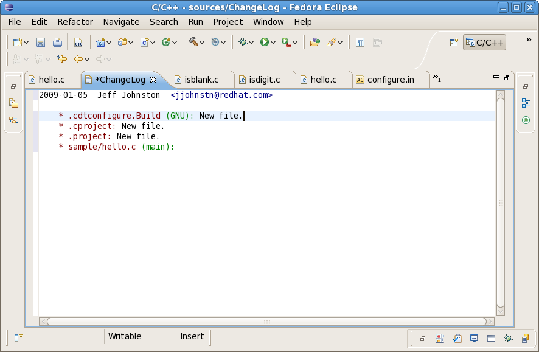

Linux Tools - Changelog Plug-in
Overview
The Linux Tools ChangeLog plugins add automatic ChangeLog entry creation support to Eclipse for projects checked out from a Team repository (CVS and SVN). Method and function indication is provided for C, C++, and Java language files. The RPM .spec %changelog format is also supported. A ChangeLog entry can be created for a single file or an entire project. In addition, a ChangeLog editor is provided which makes it easy to format the file consistently and to put the latest entry into the clipboard buffer for usage in a repository commit operation.
Current Status
In conjunction with Eclipse SDK and CDT, the plugin supports:- C, C++, and Java language support for modified functions/methods
- Preference page to set name, e-mail address, and desired entry style
- Automatic new and removed file entries
- Support in Team synchronize view as well as C View and Project Views, C Editor, and Java Editor
- Single ChangeLog entry for current file
- Full entry for entire project
- Tested with CVS and SVN repositories
- Colorized ChangeLog editor with support for diffing to clipboard
- Short-cut key sequences CTL+ALT+P for project entry and CTL+ALT+C for single entry
Future Plans
- git and mercurial support
Screenshots
Changelog sample 
Demos
Try it out
Please use our update site as described here.You can also check the project plugins out of Git directly from github at https://github.com/eclipse-linuxtools/org.eclipse.linuxtools.git. You will need to check out the following from the changelog subdirectory:
org.eclipse.linuxtools.changelog.core
org.eclipes.linuxtools.changelog-feature
org.eclipse.linuxtools.changelog.cparser
org.eclipse.linuxtools.changelog.doc
org.eclipse.linuxtools.changelog.javaparser
From there, run the plugins as an Eclipse Application.